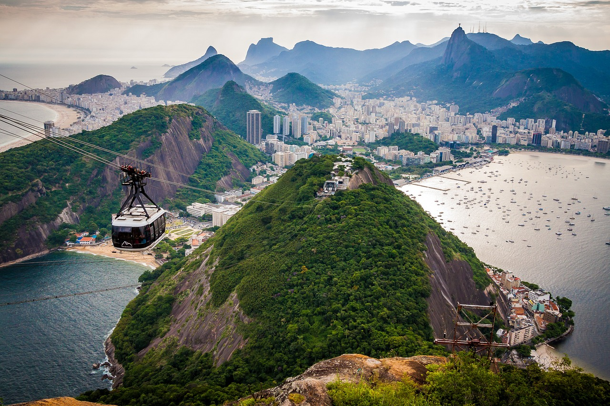

Places to see in Brazil
Lençóis Maranhenses National Park - Parque Nacional dos Lençóis Maranhenses
The name of this 1550 sq km national park refers to its immense expanses of dunes, which look like lençóis (bedsheets) strewn across the landscape; they stretch 70km along the coast and up to 50km inland. Located halfway between São Luís and the Piauí border, it's a spectacular place, especially from about
May to September when rain filtered through the sand forms thousands of crystal-clear pools and lakes between the dunes.
The lagoons are at their best in June, July and August. The park also includes beaches, mangroves and some interesting fauna, especially turtles and migratory birds.Click for more information
Sugar Loaf Mountain - Pão de Açúcar
Sugar Loaf, Portuguese Pão de Açúcar, landmark peak overlooking Rio de Janeiro and the entrance of Guanabara Bay, in southeastern Brazil. Named for its shape, the conical, granitic peak (1,296 feet [395 metres]) lies at the end of a short range between Rio de Janeiro and the Atlantic Ocean. At its base is the fortress of São João. A cable car runs from its summit to the adjacent Urca Hill, near the foot of which is the site of the Praia Vermelha Campus of the Federal University of Rio de Janeiro.Click for more information
Iguaçu Falls - Foz do Iguaçu
One of the planet’s most awe-inspiring sights, the Iguazú Falls are simply astounding. A visit is a jaw-dropping, visceral experience, and the power and noise of the cascades – a chain of hundreds of waterfalls nearly 3km in extension – live forever in the memory. An added benefit is the setting: the falls lie split between Brazil and Argentina in a large expanse of national park, much of it rainforest teeming with unique flora and fauna.Click for more information
Christ Reedemer - Cristo Redentor
Christ the Redeemer, Portuguese Cristo Redentor, colossal statue of Jesus Christ at the summit of Mount Corcovado, Rio de Janeiro, southeastern Brazil. Celebrated in traditional and popular songs, Corcovado towers over Rio de Janeiro, Brazil’s principal port city.
The statue of Christ the Redeemer was completed in 1931 and stands 98 feet (30 metres) tall, its horizontally outstretched arms spanning 92 feet (28 metres). The statue has become emblematic of both the city of Rio de Janeiro and the whole nation of Brazil.Click here for more information